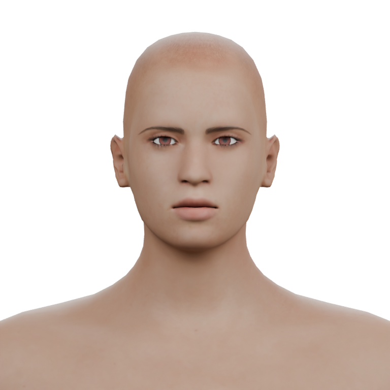
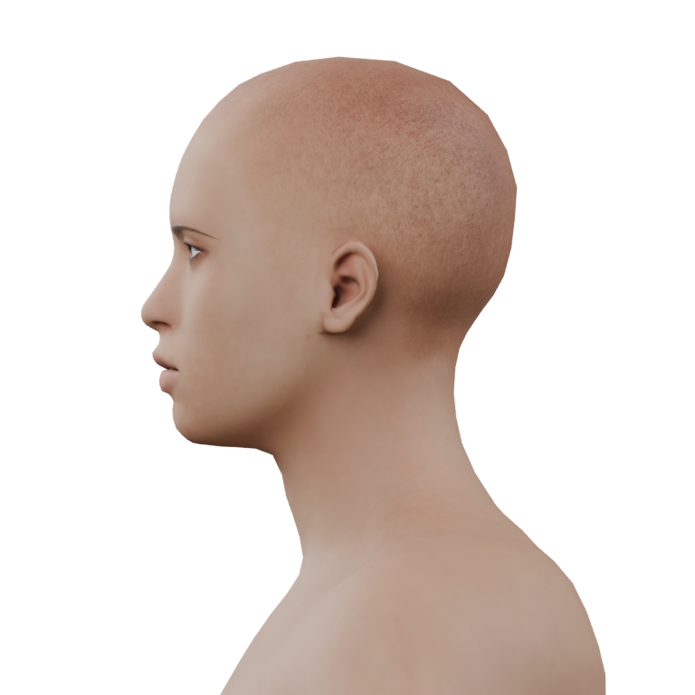

Ari · face brief
First separate the reference’s gentle smile from underlying face shape. Keep lips and eyes readable, mouth corners relaxed, and cheek and ear framing coherent. The reference and current views use different angles and lighting; they are a qualitative guide.
Full face brief · Source evidence and limits · Skin response comparison
Original character reference
 Restrained smile and soft cheek framing. Original reference retained.
Restrained smile and soft cheek framing. Original reference retained.Current head controls

Front · isolated matte study
Profile · same source formNext decision
Existing smile candidates are recorded on the head, brows and lashes. Their actual deformation and dependencies still need verification before a smile trial. A separately owned face-shape study is the alternative. No expression or shape change has been made here.